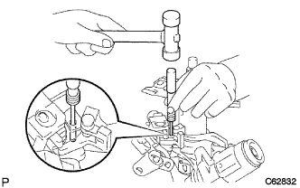

Column shift lever decomposition |
| 1. Remove the column shift lever |
Remove the wire guide and the wire harness clamp.
 |
Unlock the claws and separate the wire guide from the control shaft.
 |
Use a minus thin blade driver to remove the wire harness clamp.
Remove the steering column bracket ASSY UPR.
Use a drill to make a hole in which the reverse tap is standing on the steering rock set bolt.
 |
Use the reverse tap to remove the steering lock set bolt.
|  |
Use a ping -punch and a hammer to remove the steering lock pin and remove the steering column bracket ASSY UPR and a column shift lever.
Remove the bolt and remove the column shift shifting bell crank ASSY and harness connector bracket from the column shift lever.
Remove the column shift control shaft.
 |
Use SST to remove the snap ring.
 |
Remove the control shaft, spaca, wavesha and bush from the column shift lever.